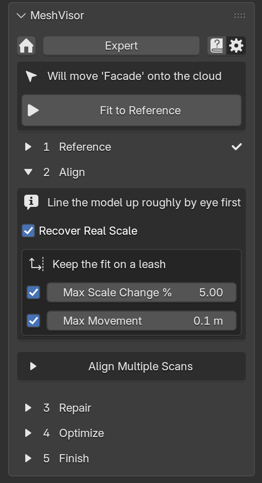
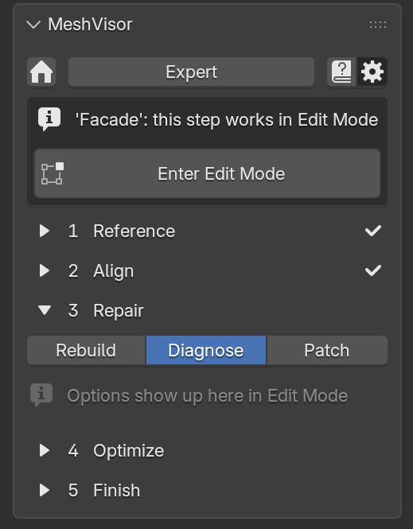
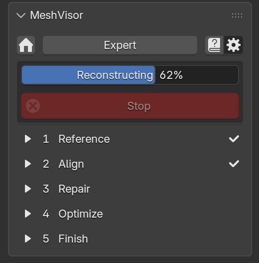
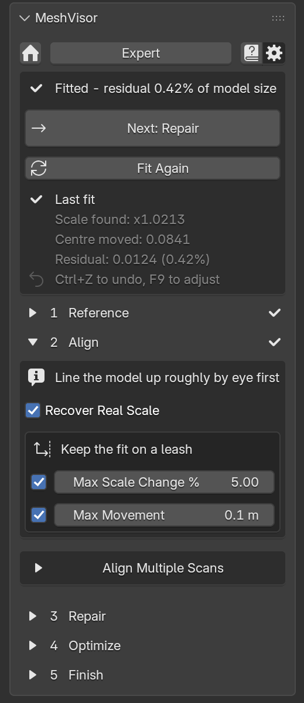
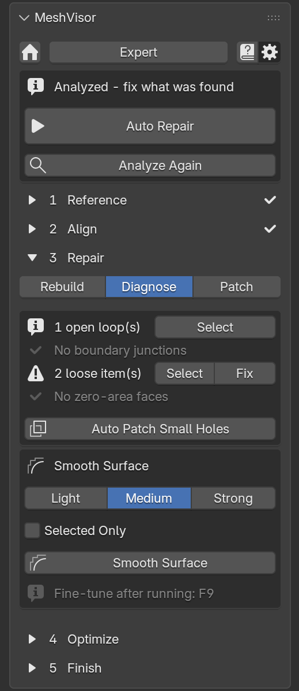
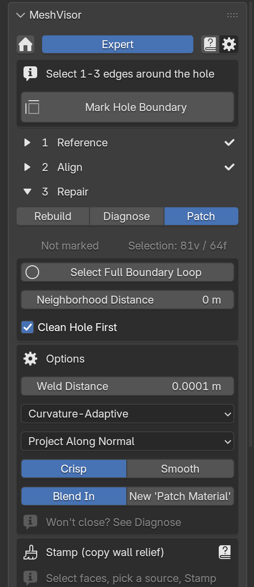

MeshVisor
Présentation
MeshVisor est un add-on Blender pour l'étape qui sépare un scan 3D d'un modèle exploitable. Les relevés photogrammétriques et laser présentent des trous là où la caméra n'a rien pu voir, des rabats repliés sous eux-mêmes, des débris épars et une échelle arbitraire. MeshVisor les répare et, chaque fois que c'est possible, il les répare à partir de mesures réelles plutôt qu'au jugé.
Son idée distinctive est un nuage de points de référence, en général un scan laser. On ajuste le maillage photogrammétrique sur le nuage et l'on en déduit son échelle réelle. On reconstruit ensuite les zones endommagées à partir des points mesurés, et l'on voit de combien le résultat s'en écarte avant de l'accepter. Pour les trous sans données de référence, un comblement classique (patch) ferme la lacune en reprenant la taille des triangles, la courbure et le détail de surface environnants.
Mark Hole Boundary →
Patch.Avec un scan laser : Reference (charger le nuage) → Align (
Fit to Reference) →
Repair › Rebuild (Rebuild & Repair → vérifier les chiffres → Accept Repair).
Les maquettes physiques (plaques de courbes de niveau, DXF, socles pour impression 3D) relèvent d'un add-on distinct, ModelVisor.
Philosophie
La vérité historique, pas une surface lisse
Le scan d'un bâtiment ou d'un objet est un document. MeshVisor ne procède à aucun ajustement ni à aucune approximation cachés : une réparation ne doit jamais passer pour l'original. Il suit la règle qu'appliquent les restaurateurs aux comblements volumétriques des objets archéologiques : ce qui a été ajouté est reconnaissable de près et s'intègre à l'ensemble à distance.
- Les zones reconstruites et comblées peuvent recevoir leur propre matériau de reconstruction.
- Stamp montre ses réparations dans la Reconstruction Colour (couleur de reconstruction), en ton atténué ou en aplat, et marque chaque face qu'il a modifiée (
mv_stamped). La couleur n'est jamais fondue dans l'original autour d'une réparation. - L'adoucissement du raccord sur un bord n'est permis que pour la géométrie, là où il supprime une marche que le scan n'a jamais eue, et jamais pour la couleur.
- Le relief copié d'ailleurs peut être désactivé (Relief Strength 0) : un modèle de relevé ne montre alors que ce qui a été mesuré à cet endroit.
Les mesures avant les inventions
Un trou comblé est une affirmation sur une surface que personne n'a vue. Lorsqu'un scan de référence possède de vrais points à cet endroit, MeshVisor reconstruit à partir d'eux. Lorsqu'il n'en possède pas, il le signale et se rabat sur un comblement qui ne fait que prolonger la surface environnante. La zone reconstruite peut recevoir son propre matériau, selon la convention de la conservation-restauration pour les comblements, afin de rester identifiable par la suite.
Fondé sur la littérature scientifique
Les principaux algorithmes proviennent de travaux publiés en traitement de la géométrie : remaillage isotrope et adaptatif à la courbure, métriques d'erreur quadriques, lissage biharmonique (fairing), reconstruction Screened Poisson, ICP avec la similitude en forme close d'Umeyama, normales par ACP. Voir Bibliographie.
Prévisualiser, mesurer, puis accepter
Les étapes destructives montrent leur résultat avant de l'appliquer. Rebuild & Repair laisse son patch sous forme d'objet séparé, avec son écart au scan, jusqu'à ce que vous choisissiez Accept ou Reject. Les outils de sélection sélectionnent, ils ne suppriment pas. Chaque opérateur s'annule d'un seul Ctrl+Z.
Simple d'abord, tout reste accessible
Le panneau montre le parcours courant : une carte avec l'action suivante, et cinq étapes qui ne contiennent que le nécessaire. Les paramètres qui changent la manière dont un résultat est produit (réglages internes de Poisson, Settings Sweep, outils de débogage) apparaissent quand vous activez Expert, à l'écart jusqu'à ce que vous en ayez besoin.
Public visé
Usages adaptés
- Photogrammétrie de bâtiments, de ruines, de monuments et de terrains, en particulier lorsqu'il existe un scan laser du même site.
- Documentation et restauration du patrimoine : des reconstructions que l'on peut mesurer et qui restent identifiables par la suite.
- Nettoyage de scans bruts : sommets non soudés, jonctions, rabats repliés, débris isolés, facettes effilées d'aire nulle.
- Objets et artefacts présentant des trous dus aux angles morts de la caméra.
Usages moins adaptés
- CAO de précision. Les cylindres et les plans exacts se font mieux avec les outils de modélisation de Blender ou un logiciel de CAO.
- Très grands patchs (au-delà d'environ 50 000 à 70 000 faces d'un coup). Patch et Remesh sont écrits en Python pur : traitez donc les grands trous par parties. Rebuild, qui exécute Poisson comme programme natif, gère bien mieux les grandes zones.
- Transformer un nuage de points brut en modèle complet. Rebuild reconstruit des zones ; pour un modèle complet, l'outil adapté est un logiciel de photogrammétrie dédié.
Installation
- Si une version antérieure est installée :
Edit → Preferences → Add-ons, trouvez MeshVisor, Remove. - Installez le
.zip: faites-le glisser dans la fenêtre de Blender, ou utilisezInstall from Diskdans le même menu. - Cochez la case pour l'activer. Le panneau se trouve dans la barre latérale de la vue 3D (N), onglet MeshVisor.
Testé sur Blender 4.5 – 5.3. Rebuild utilise
PoissonRecon et SurfaceTrimmer de Michael Kazhdan (licence MIT). Les versions compilées pour Windows
et Linux sont incluses dans l'add-on. Sous macOS, compilez-les depuis les sources, puis indiquez leur emplacement dans
Preferences › Add-ons › MeshVisor › Rebuild Executables. Check Executables
confirme qu'ils sont trouvés.
Déroulement général
- Reference : chargez le nuage de points de référence, rendez-le lisible dans la vue 3D, rognez ce qui est inutile.
- Align : ajustez le maillage sur le nuage (et retrouvez son échelle réelle), ou alignez plusieurs scans les uns sur les autres.
- Repair, trois sous-sections d'une même tâche :
- Rebuild : reconstruire une zone endommagée à partir du nuage.
- Diagnose : trouver et corriger les problèmes généraux du maillage.
- Patch : combler un trou dépourvu de données de référence.
- Optimize : réajuster la densité de triangles sur une sélection, en général un patch qui vient d'être créé.
- Finish : valider le résultat et corriger ce qui reste avant l'export.
Sans scan de référence, commencez directement par Repair : Diagnose, puis Patch. L'écran de démarrage propose ce parcours sous Only a Mesh to Repair. Le panneau explique la carte, les étapes et le bouton Expert.
Le panneau
Le panneau comporte trois parties, de haut en bas : un en-tête, une carte avec l'action suivante, et la liste des étapes.

Écran de démarrage
Tant qu'aucun nuage de référence n'est choisi, le panneau demande ce dont vous disposez. Point Cloud and a Mesh ouvre Reference. Only a Mesh to Repair ouvre Repair › Diagnose. A Meshroom Project ouvre Reference avec l'import Meshroom déplié. L'icône de maison dans l'en-tête ramène à cet écran.

La carte
La carte sous l'en-tête indique où vous en êtes et propose la seule action suivante sous la
forme d'un grand bouton : Load Point Clouds from Folder, Fit to Reference,
Rebuild & Repair, Mark Hole Boundary, Patch, Remesh,
Validate Asset. Quand une étape demande le mode Édition, le bouton est
Enter Edit Mode. Pendant un traitement, la carte affiche la barre de progression, avec
Stop quand le traitement peut être arrêté. Après un Rebuild, elle affiche le résultat, avec
Accept et Reject.

Mode Édition
Diagnose, Patch, Optimize et Finish agissent sur les sommets et les faces du maillage, et demandent donc le mode Édition. Quand vous ouvrez l'une de ces étapes en mode Objet, la carte nomme le maillage sélectionné et propose Enter Edit Mode. Les options de l'étape apparaissent une fois en mode Édition. Si aucun maillage n'est sélectionné, la carte demande d'en sélectionner un.

Résultats et progression
Après Fit, Rebuild, Patch et Remesh, la carte présente le résultat toujours de la même façon : un titre, les chiffres, et comment annuler. Pendant un traitement, la même carte affiche la barre de progression, avec Stop quand le traitement en dispose. Les autres s'arrêtent avec Esc.

Examiner une reconstruction
Un Rebuild ne modifie pas tout de suite votre maillage. La nouvelle pièce est un objet séparé, et la carte attend votre décision : Accept Repair la soude au maillage, Reject la supprime. Sélectionnez la pièce dans la vue pour que Accept devienne disponible. Remove Drips et Regularize Walls sont des nettoyages facultatifs à lancer avant d'accepter.

Le dernier résultat
Après un ajustement, la carte garde le dernier résultat sous les boutons : l'échelle trouvée, le déplacement du modèle et le résidu. Le résidu est la distance qui reste entre le modèle et le nuage, donnée aussi en pourcentage de la taille du modèle. En dessous de 1 %, l'ajustement est bon, et à partir de 3 % la carte le signale comme douteux. Fit Again relance l'ajustement, et F9 en change les réglages.

Étapes
Reference, Align, Repair, Optimize et Finish forment une liste numérotée. Cliquez sur une étape pour l'ouvrir, et de nouveau pour la fermer. Une seule étape est ouverte à la fois, et une coche indique les étapes déjà faites. Une étape ouverte contient ses options ; l'action se trouve dans la carte.
Simple et Expert
Le bouton Expert de l'en-tête est le seul réglage de complexité. Désactivé, chaque étape montre le nécessaire. Activé, chaque étape ajoute ses options fines et ses mesures, la liste gagne l'étape Research, et Settings affiche les exécutables et les outils de débogage. Les options masquées en mode Simple gardent leur valeur et restent appliquées.
Préréglages
En mode Simple, deux réglages sont des préréglages et non des nombres. Detail de Rebuild vaut Draft, Normal ou Fine (profondeur d'octree 6, 8 ou 10), et Smooth Surface vaut Light, Medium ou Strong. Le mode Expert affiche les nombres. Avec une valeur réglée à la main, aucun préréglage n'est mis en évidence.
Ajuster après l'exécution (F9)
Smooth Surface et Fit to Reference peuvent être affinés après leur exécution : appuyez sur F9 (Adjust Last Operation), changez une valeur, et l'opération est relancée avec elle. Le panneau garde ce que vous y réglez. Stamp fonctionne de la même façon. Patch, Remesh et Rebuild tournent en arrière-plan et ne peuvent pas être relancés ainsi.
Menu circulaire des outils
Shift+Alt+V dans la vue ouvre les outils qui agissent sous le curseur : Draw Crop Volume, Add Crop Volume, Mark Alignment Point, Mark Hole Boundary, Select Boundary Loop, Pick Stamp Source, Stamp Selected Faces et Pick Geometry Source. Les outils qui ne s'appliquent pas dans le mode courant sont grisés. Le raccourci se change dans Preferences › Keymap, et Settings comporte un bouton qui ouvre le menu. Pendant qu'un outil de la vue est actif, la barre d'état en bas de la fenêtre indique où cliquer.
Le bouton ? ouvre cette page à la section où vous vous trouvez. Le bouton ⚙ ouvre Settings.
Pas à pas
Deux parcours guidés. Le parcours simple ne demande pas de scan de référence et reste en mode Simple. Le parcours avancé utilise un scan laser et les options du mode Expert.
Simple : réparer un maillage seul
- Ouvrez la barre latérale (N), onglet MeshVisor, et choisissez Only a Mesh to Repair.
- Sélectionnez le maillage et cliquez sur
Enter Edit Modedans la carte. - Cliquez sur
Analyze. La liste montre ce qui a été trouvé :Selectmontre un problème dans la vue,Fixrépare ce type de problème. - Cliquez sur
Auto Repairpour les problèmes généraux, puis surAuto Patch Small Holespour les nombreux petits trous. - Pour un trou plus grand, ouvrez Patch : sélectionnez une arête du trou, cliquez sur
Mark Hole Boundary, puis surPatch. - Si une zone plane est bruitée, revenez à Diagnose, choisissez Light, Medium ou Strong, puis cliquez sur
Smooth Surface. - Ouvrez Finish :
Validate Asset, corrigez ce qui reste, puis exportez avec File › Export.
Avancé : reconstruire à partir d'un scan laser
- Choisissez Point Cloud and a Mesh, cliquez sur
Load Point Clouds from Folderet désignez le scan laser comme nuage. Pour un très grand scan, liez le fichier Full-Res et gardez dans la scène une copie allégée. - Dans Crop Volumes, tracez avec
Drawun volume Keep Inside Only sur la zone abîmée. L'outil se trouve aussi dans le menu circulaire (Shift+Alt+V). - Ouvrez Align : placez le maillage à l'œil, sélectionnez-le et cliquez sur
Fit to Reference. Lisez le résidu dans la carte. Si l'ajustement a atteint une limite, appuyez sur F9 et réglez-la. - Ouvrez Repair › Rebuild : sélectionnez le maillage et le volume, choisissez un préréglage de Detail, activez Remove Vegetation si des plantes couvrent le mur, puis cliquez sur
Rebuild & Repair. - Lisez l'écart dans la carte. Nettoyez au besoin avec
Remove DripsouRegularize Walls, puisAccept RepairouReject. - Pour une zone récalcitrante, activez Expert et lancez un
Settings Sweepdans l'étape Research, puis appliquez à Rebuild les réglages de la meilleure variante. - Comblez avec Patch ce que le nuage ne couvre pas, et retirez tuyaux ou câbles d'un mur avec Stamp.
- Sélectionnez la nouvelle pièce et ouvrez Optimize :
Remeshégalise la densité de ses triangles. - Ouvrez Finish :
Validate Asset, Normals, Merge, puis exportez.
Reference

La référence est un nuage de points métrique, en général un scan laser. C'est le seul élément de la scène qui connaisse les mètres réels ; il ne bouge donc jamais : c'est le maillage qui est ajusté sur lui (voir Référence & échelle réelle).
1 — Charger le nuage
Charge tous les nuages de points d'un dossier (éventuellement avec Include Subfolders). Choisissez ensuite le scan laser comme référence : c'est celui qui est à l'échelle réelle.
Importe un nuage de points (.ply ou .abc) ou un maillage, texturé ou non, directement depuis la sortie de Meshroom, sans aller-retour par CloudCompare.
Liez le fichier du nuage original, à pleine densité (PLY binaire). Rebuild ne lit alors que la zone dont il a besoin, directement sur le disque : le nuage complet n'a jamais à être chargé dans Blender. Une copie légère et sous-échantillonnée dans la scène suffit pour l'affichage et l'ajustement. Source choisit les données qu'utilise Rebuild : Referenced (le fichier) ou Loaded (l'objet dans la scène).
2 — Le rendre lisible
Ces trois réglages se trouvent dans le cadre Display, fermé par défaut. Ils ne changent que l'affichage.
| Commande | Effet |
|---|---|
| Point Size | Taille d'affichage des points. Seul l'affichage change. |
| Viewport Thinning | Les points plus proches que cette distance sont affichés comme un seul, au moyen d'un modificateur Geometry Nodes. Affichage seulement : l'ajustement et Rebuild utilisent toujours les points réels. Apply, Suspend et Reset se trouvent à côté. |
| Sphere View | Affiche les points sous forme de petites sphères, avec un rayon et un matériau réglables, pour contourner les bogues de la vue 3D qui font disparaître des points dans les grands nuages. |
3 — Rogner
Formes qui retirent des points de la source pleine résolution (Cut Inside) ou ne gardent que ce qui se
trouve à l'intérieur (Keep Inside Only). Add place une boîte, Draw en trace une
dans la vue 3D, et Convert transforme vos propres maillages en volumes.
Preview Exclusion montre le résultat avant que rien ne soit définitif. Un volume Keep Inside Only
est aussi le moyen d'indiquer à Rebuild quelle zone reconstruire.
Supprime des points des données réelles, pas seulement de l'affichage. Visible en mode Édition, et une confirmation est demandée d'abord.
Align
Ajuster un maillage sur la référence
- Sélectionnez le modèle (le maillage photogrammétrique). Le nuage reste en place.
- Placez-le approximativement à l'œil : ICP affine un alignement, il ne peut pas en trouver un à partir de rien.
Fit to Reference. Le panneau indique le résidu et, avec Recover Scale activé, le facteur d'échelle : ce que vaut en réalité une unité de votre modèle.
Limit Scale Change (5 % par défaut) et Limit Movement tiennent l'ajustement en laisse. Après un placement manuel soigneux, un ajustement qui veut redimensionner de 30 % s'est accroché à la mauvaise partie du nuage. Lorsqu'une limite est atteinte, le panneau le signale.
Après un ajustement, la carte affiche le dernier résultat. Appuyez sur F9 pour changer les limites ou les options ci-dessous et relancer l'ajustement.
Options Expert
| Réglage | Signification |
|---|---|
| Rough Fit First | Place le modèle au centre du nuage, à peu près à sa taille, avant l'ajustement proprement dit. |
| Ignore Worst Matches | Fraction des paires de points conservées à chaque passe, les plus proches d'abord (0.8). Les deux scans ne couvrent jamais exactement la même zone. |
| Passes · Points Used | Limite d'itérations (l'ajustement s'arrête en général avant) et taille de l'échantillon. Quelques dizaines de milliers de points bien répartis fixent l'ajustement aussi bien que des millions. |
Aligner plusieurs scans replié
Pour plusieurs scans du même site, déjà en unités réelles.
- Target et Anchor : Chain aligne chaque scan sur le précédent, Fixed Base aligne tous les scans sur la même base.
- Isolate for Alignment n'affiche que la source et la cible : les clics tombent là où vous le voulez et la vue 3D est plus légère.
Exit Isolationrétablit la scène. Cela ne filtre pas les points qu'utilise ICP. Align to Target (ICP). Estimate Scale est désactivé par défaut : les scans partagent déjà les mêmes unités, et calculer l'échelle à partir d'un recouvrement partiel peut dériver.- Recouvrement insuffisant ? Marquez à la main des points correspondants avec l'outil
Mark Correspondence Point, côté Source puis côté Target, puis lancezAlign from Marked Points. - Lock Pair rend le scan aligné enfant de sa cible sans déplacer ni l'un ni l'autre ; ainsi, aligner plus tard un troisième scan sur la paire déplace les deux ensemble, comme un seul bloc rigide.
Repair
Une seule tâche, trois entrées. La rangée en haut de l'étape permet de passer de l'une à l'autre : Rebuild (à partir du nuage de référence), Diagnose (problèmes généraux du maillage) et Patch (combler un trou sans données de référence). La carte indique ce qui est marqué ou sélectionné et l'action suivante.
Repair › Rebuild

Reconstruit une zone endommagée à partir des points mesurés au lieu d'inventer une géométrie par-dessus la lacune. Autour d'un trou de photogrammétrie, la surface se replie souvent sous elle-même : le bord visible n'est donc pas la frontière topologique. Combler cette frontière crée une fausse membrane, et le remaillage par voxels s'y perd. Le nuage de référence, lui, contient de vraies mesures à cet endroit.
1 — Sélectionner la zone
- Rebuild from Cloud (nuage seul, pièce autonome) : sélectionnez un volume de découpe Keep Inside Only, en Object Mode.
- Rebuild & Repair (maillage et nuage, en continuité avec le maillage) : sélectionnez aussi le maillage ou, en Edit Mode, les sommets autour du trou.
2 — Rebuild
| Réglage | Signification |
|---|---|
| Detail | Un préréglage : Draft, Normal ou Fine (profondeur d'octree 6, 8 ou 10). Le mode Expert affiche le nombre. Chaque niveau de profondeur divise par deux le plus petit détail représentable. L'octree est adaptatif et refuse d'aller plus fin là où il a trop peu de points. |
| Drop Folded-Under Geometry | Écarte le maillage orienté vers le bas avant la reconstruction, pour que le repli sous le bord d'un trou ne puisse pas tirer la surface vers le bas. |
| Mark as Reconstruction | Donne au nouveau patch un matériau distinct, de ton neutre (couleur réglable). C'est la convention de la conservation-restauration : le comblement reste identifiable. |
Préparation du nuage avant Rebuild
| Option | Effet |
|---|---|
| Remove Vegetation | Exclut de la reconstruction le lierre, les herbes et les buissons. Green utilise la couleur (l'indice d'excès de vert, qui exige donc un nuage coloré). Scatter détecte les points dont les voisins ne forment pas une surface, comme un lierre sombre qui n'est pas assez vert. Preview Vegetation montre en vert ce qui serait exclu. |
| Align Cloud Here | Avant la reconstruction, ajuste le nuage sur le maillage dans cette seule zone (ICP local) et y ramène les points. Le maillage ne bouge jamais. Max Move arrête un ajustement qui voudrait glisser sur la mauvaise surface. À utiliser quand un alignement global reste décalé de quelques centimètres à cet endroit. |
| Orient Normals from Mesh | Donne à chaque point du nuage le côté extérieur de la surface de maillage la plus proche. Les normales estimées sur un mur de moellons bruts s'inversent au hasard, et la reconstruction enferme alors de petites bulles. Rebuild & Repair uniquement. |
| Trust the Cloud Inside | À l'intérieur de la sélection, reconstruit à partir du nuage seul. Le maillage ne fournit que l'anneau qui l'entoure, de sorte que le résultat le rejoint quand même. Pour une zone où le maillage est faux (bombements, mur au mauvais endroit), et pas seulement manquant. |
| Accept Replaces Covered Mesh | À l'Accept, supprime les faces du maillage que le patch recouvre avant de l'y joindre. Désactivé : le patch est ajouté et l'original reste dessous. |
3 — Vérifier, nettoyer, puis Accept ou Reject
Le patch reste un objet séparé, déjà mesuré : nombre de faces, arêtes non-manifold, ainsi que l'écart médian et l'écart au 95e centile par rapport aux points de référence. Avant d'accepter, on peut lui appliquer deux nettoyages, tous deux réglables ensuite avec F9 :
Remove Dripssupprime les « stalactites » pendantes que Poisson laisse sous les surplombs et les ouvertures.Regularize Wallsredresse les faces des murs, soit avec Keep Relief (les pierres restent), soit avec Flatten.
Accept Repair soude le patch dans le maillage. Reject le supprime. Rien n'est
finalisé à votre insu.
Pour comparer plusieurs reconstructions côte à côte, utilisez Research. Les paramètres internes de Poisson (adhérence aux points, moyennage du bruit, rognage, marges, pondération par la confiance) se trouvent sous Expert et sont expliqués dans Fonctionnement de Rebuild.
Fuse with Reference expérimental
Déplace le maillage sur le nuage de référence au lieu de le reconstruire. Rien de nouveau n'est construit : il n'y a donc pas de patch à rogner, à examiner et à souder ; le maillage conserve ses sommets, ses faces et ses UV. En Edit Mode, l'outil agit sur les sommets sélectionnés et s'estompe sur quelques anneaux autour d'eux (Blend Rings) ; en Object Mode, sur tout le maillage.
- Chaque sommet mesure à quelle distance se trouve le nuage le long de sa normale, et avec quelle certitude. Une seule correction lisse est calculée pour toute la zone ; là où le nuage n'a pas de points, elle est reportée depuis les voisins, si bien qu'aucune marche n'apparaît là où le nuage s'arrête.
- Le degré de lissage de la correction est mesuré à partir des données. Avec un nuage bruité, le maillage garde son propre détail et seule sa dérive est corrigée ; avec un nuage propre et dense, il prend le détail du nuage.
- Thickness Guard (activé) : sur un mur mince, une face ne suit que les points de la moitié la plus proche du mur, de sorte que le côté que le scanner n'a pas vu n'est pas tiré sur celui qu'il a vu.
- Les trous restent des trous : comblez-les d'abord avec Patch, puis Fuse tire le patch sur le nuage. Si le nuage atteint moins de 5 % des sommets, rien ne change et le message indique d'aligner d'abord.
Sections expérimental
Découpe la partie sélectionnée du maillage en tranches parallèles, à intervalles de Spacing, pour voir ce que font le maillage et le nuage et corriger le maillage à la main. Chaque tranche montre le maillage actuel (vert), le maillage avant Fuse (rouge), les points du nuage (gris) et les lignes modifiables (jaune), chacun avec son propre bouton d'affichage ; les flèches passent d'une tranche à l'autre et la vue se tourne face à chacune.
Edit Section: déplacez des sommets sur les lignes jaunes (par exemple, ramenez un bombement dans l'alignement), ou redressez-en une suite avecStraighten. Supprimer des points (X) retire cette partie du maillage, comme une coulure qui pend devant un mur.Apply to Mesh: le maillage suit les lignes. Un point déplacé tire fermement, les points non touchés retiennent doucement, si bien que la modification reste locale. Les tranches sont ensuite recoupées dans le nouveau maillage.
Repair › Diagnose

Santé du maillage
Parcourt le maillage une fois, seulement au clic, et liste ce qu'il trouve : contours ouverts, jonctions de bord, géométrie isolée et faces d'aire nulle. Sur chaque ligne, Select montre le problème dans la vue et Fix répare ce type de problème puis relance l'analyse. Un contour ouvert n'est pas toujours un défaut (le bord d'une façade en est un), c'est pourquoi cette ligne n'a que Select.
Weld Entire Mesh → Aggressive Auto-Repair des jonctions → Analyze, en une seule fois. Un seul Ctrl+Z annule le tout.
Comble chaque trou dont l'aire est inférieure ou égale à Max Hole Area. Cela couvre les dizaines de minuscules défauts de scan, tandis que les vraies ouvertures plus grandes que la limite restent intactes. Scale Factor ajuste la limite lorsque 1 unité ≠ 1 mètre.
Réduit le bruit de reconstruction sur les zones planes (murs, sols) sans arrondir les arêtes réelles. Les arêtes plus vives que le Feature Angle, ainsi que toutes les arêtes ouvertes, ne bougent jamais. Réglages : Strength, Passes, un Vertex Group peint, facultatif, pour une transition progressive, et Selected Only.
En mode Simple, l'intensité est un préréglage : Light, Medium ou Strong. Affinez après l'exécution avec F9.
Nettoyage général
| Outil | Sélectionne |
|---|---|
| Select Loose Islands | Tous les morceaux déconnectés, sauf le plus grand. |
| Select Loose Edges/Verts | La géométrie filaire sans face. |
| Select Interior Faces | Les faces enfouies à l'intérieur du volume (surfaces « couverture » doublées). |
| Select Downward-Facing Faces | Le dessous des rabats repliés, dans un cône réglable. |
Boundary health (santé des bords) à vérifier avant de marquer un trou
| Outil | Effet |
|---|---|
| Repair Boundary Junctions | Soudure locale sûre et nettoyage des éléments dégénérés là où 3 arêtes ouvertes ou plus se rejoignent. |
| Select Boundary Junctions | Montre précisément ces points. |
| Aggressive Auto-Repair risque accru | Soudure plus large ; sépare en outre les croisements nets de type « deux trous qui se touchent en un point ». |
| Weld Entire Mesh | Pour les scans bruts non soudés partout (jonctions tout le long d'un contour). |
At a Junction, Prefer : Largest ou Smallest Hole détermine quelle boucle est suivie lorsque deux trous se touchent.
Repair › Patch

Comble un trou dépourvu de données de référence, en reprenant la taille des triangles, la courbure et le détail de surface environnants. Fonctionne en Edit Mode.
1 — Marquer le trou
Sélectionnez 1 à 3 arêtes ouvertes du trou. Select Full Boundary Loop montre le contour complet,
et Mark Hole Boundary l'enregistre dans le maillage. Weld Distance fusionne d'abord les sommets
en double : les scans bruts gardent souvent un sommet distinct par face. Si la boucle ne se ferme pas, voir
Santé des bords.
2 — Neighborhood (voisinage)
Distance jusqu'à laquelle l'analyse regarde à partir du bord. 0 m correspond à la première rangée de faces. Un rayon plus grand donne plus de contexte au Surface Fit.
3 — Combler
Avant le comblement, supprime la géométrie orpheline dans le trou marqué et autour de lui :
- arêtes et sommets sans face, comme ceux qui restent après la suppression d'une zone plus vaste avec Delete › Only Faces ;
- petits fragments de faces isolés ;
- ailettes pendant d'une arête non-manifold ;
- faces qui traversent leurs voisines près du bord.
Si la suppression d'une face ouvre un petit trou séparé, cet endroit est refermé. Les trous situés ailleurs ne sont jamais touchés. Le bord est ensuite retracé, et le message de résultat énumère ce qui a été supprimé.
Choisissez un Density Mode, un Surface Fit,
Seam et Material, puis lancez Patch. Le traitement s'exécute en arrière-plan
avec une barre de progression (Refine → Relax → Randomize). Appuyez sur Esc pour annuler.
Stamp — copier le relief d'un mur sur un élément expérimental
Le Patch / Healing Brush de Photoshop, appliqué à un mur. Pour un élément fixé sur un mur qui ne devrait pas figurer dans le modèle : un tuyau, un câble, une touffe de lierre, une stalactite laissée par Rebuild, un marquage routier. L'élément est aplani sur la surface qui le porte, et le relief d'une autre partie de cette surface est reporté par-dessus. La réparation reste visible, comme le comblement lisible que les restaurateurs laissent sur un objet (voir Philosophie).
- Sélectionnez les faces de l'élément (avec un peu du mur qui l'entoure).
Pick Source, puis cliquez sur la partie du mur à copier, comme avec Alt-clic pour le Clone Stamp. Le curseur 3D marque l'endroit. Le bouton curseur placé à côté utilise le curseur 3D là où il se trouve déjà.Stamp Selected Faces. Réglez ensuite dans F9 :
| Réglage | Signification |
|---|---|
| Relief Strength | Part du relief de la source qui est reportée. 0 ne copie rien : le mur se prolonge simplement, sans rupture, sous l'élément supprimé. Utilisez 0 sur un modèle de relevé, où un relief qui n'a pas été mesuré à cet endroit ne doit pas apparaître. |
| Detail Size | Limite entre ce qui compte comme relief (copié de la source) et ce qui compte comme forme propre du mur (prise autour de l'élément). Environ une pierre. 0 = automatique : 6 longueurs d'arête du maillage, au moins 15 cm, car un maillage grossier ne peut pas porter un relief plus court. |
| Angle, Mirror, Shift Along / Up | Tourner, mettre en miroir et déplacer la source le long du mur, par exemple pour faire correspondre les assises. |
| Heal Edge | Fond le relief copié dans le relief réel au bord, pour qu'il se raccorde sans marche. Géométrie uniquement. Désactivé : copie simple. |
| Repair Colour | Mode de coloration de la zone réparée. Toned Copy (par défaut) : la texture de la source, pour que la surface reste lisible, tirée vers la Reconstruction Colour. Reconstruction Colour : cette couleur seule. Dans les deux cas, elle n'est jamais fondue dans l'original qui l'entoure. |
| Tone | Degré auquel une Toned Copy est tirée vers la Reconstruction Colour, d'un quart (jamais moins, pour qu'elle ne puisse pas passer pour l'original) jusqu'à la totalité. |
La couleur est écrite là où le maillage la stocke : dans les texels de la sélection de la texture image (plusieurs pages de texture et tuiles UDIM, comme en produisent Meshroom ou RealityCapture, sont acceptées), ou dans ses couleurs de sommets. Un maillage qui n'a ni l'un ni l'autre reçoit le matériau partagé MeshVisor Patch sur les faces traitées. La Reconstruction Colour est la couleur de ce matériau (Mark as Reconstruction, utilisé aussi par Patch et Rebuild).
Seuls les sommets situés dans la sélection bougent ; le maillage conserve ses faces. Les faces traitées reçoivent
l'attribut de face mv_stamped = 1 : on voit ainsi quel relief a été mesuré et lequel a été copié.
Ctrl+Z annule la géométrie.
La texture repeinte n'est modifiée qu'en mémoire : enregistrez l'image (Image › Save) pour la conserver.
Ctrl+Z en Edit Mode n'annule pas les pixels de l'image ; Restore Texture
rétablit donc chaque texel que Stamp a repeint pendant cette session.
Optimize

Réajuste la densité de triangles sur les faces sélectionnées (en général un patch récent, mais n'importe quelle partie du maillage convient) par rapport au maillage environnant, puis assouplit le résultat pour qu'il ne se lise pas comme une grille subdivisée.
- Density Mode, Seam et Material : voir Modes de densité et Seam & Material.
- Min Triangle Angle (18°) : limite inférieure à l'amincissement d'un triangle lors des basculements d'arêtes.
- Geometry Source : par défaut, Optimize apprend la taille, le relief et la forme des triangles à partir du maillage qui borde la sélection.
Pick Geometry Sourcepermet de désigner à la place une zone plus représentative : survolez pour prévisualiser un cercle, utilisez la molette pour le redimensionner, cliquez pour confirmer. - La limite de faces par exécution se trouve dans Settings › Performance (20 000 par défaut).
Finish

Vérifications finales, une fois que la réparation semble correcte.
| Outil | Effet |
|---|---|
| Validate Asset | Lance Analyze et affiche la même liste que Diagnose, avec Select et Fix pour chaque problème. La géométrie isolée se supprime à partir de là. |
| Normals | Oriente toutes les normales de faces vers l'extérieur. |
| Merge | Un dernier Merge by Distance sur tout le maillage (Merge Distance réglable). |
Exportez avec la commande de Blender File › Export. Pour les plaques de courbes de niveau et le DXF destinés aux maquettes physiques, utilisez ModelVisor.
Research Expert
Une sixième étape, affichée quand Expert est activé. Pour comparer des reconstructions au lieu de se fier à une seule. Settings Sweep exécute Poisson avec 2 à 5 combinaisons de réglages sur le même volume de découpe (nuage seul) et les dispose côte à côte. Il n'y a pas de note automatique : un chiffre qui récompense la « proximité aux points » favorise le réglage le plus bruité, alors qu'une personne voit d'un coup d'œil les cloques ou les boursouflures.
Refine Sweep: resserre la plage autour de la variante sur laquelle vous cliquez.Preview Variant,Show All, supprimer ouClear Allles variantes. L'historique est conservé par volume de découpe.Apply Settings from Selectedcopie les réglages d'une variante dans Rebuild. Vous pouvez aussi utiliserSave Preset,Load PresetouExport Table (CSV).Weld Selected In Placesoude la variante choisie, telle quelle, dans un maillage à sa position réelle, au lieu de relancer Poisson, qui n'aboutirait pas à la même géométrie.
Diagnostics
Cette section a été retirée du panneau. Analyze, Auto Repair et
Delete Zero-Area Faces se trouvent dans Repair › Diagnose.
Debug Mode se trouve dans Settings, avec Expert
activé.
Settings (⚙ dans l'en-tête)
| Section | Contenu |
|---|---|
| Performance | Max Faces (Remesh) : le plafond par exécution de Patch/Optimize. Un avertissement apparaît quand il est réglé haut. Reset Progress (if stuck) efface une barre de progression restée après un plantage ou un rechargement ; cela ne touche jamais au maillage. |
| Viewport Tools | Open Tools Pie et son raccourci. |
| Quality | Sharp Edge Protection (35°) : les arêtes plus vives que cette valeur ne sont jamais fusionnées pendant le raffinement Uniform. |
| Language | English. |
| Préférences de l'add-on | Executables and Debug… les ouvre : Rebuild Executables (choix d'un autre dossier, plus Check Executables),
Debug Mode et son journal, Saved Sessions (journaux écrits sur le
disque tant que Debug Mode est activé, pour qu'ils survivent à un plantage) et un
Crash Diagnostic pour Settings Sweep. |
Référence & échelle réelle
Une reconstruction photogrammétrique a une échelle arbitraire. Un scan laser est métrique. MeshVisor traite donc le nuage comme la référence et déplace le maillage : il calcule la rotation, la position et, avec Recover Scale, une échelle uniforme. Il utilise pour cela ICP (iterative closest point, point le plus proche itératif) avec, à chaque passe, la transformation de similitude en forme close d'Umeyama. Une fraction des pires correspondances est écartée, car les deux scans ne couvrent jamais exactement la même zone. Le facteur retrouvé indique ce que vaut en réalité une unité Blender de votre modèle.
Les points sans normales, cas fréquent dans les nuages exportés, en reçoivent une estimation : un ajustement de plan local (ACP) donne la direction de chaque point, puis une propagation cohérente sur le patch détermine quel côté est l'extérieur. Il n'y a donc pas de passage obligé par CloudCompare.
Fonctionnement de Rebuild
Rebuild rassemble les points du nuage dans la zone, plus un anneau de bonne surface environnante, la Context Margin. Poisson a besoin d'une vraie surface tout autour de la lacune pour savoir de quel côté est l'extérieur. Rebuild exécute ensuite Screened Poisson (Kazhdan & Hoppe) et rogne le résultat avec SurfaceTrimmer.
- Poisson ferme toujours la surface. Là où il n'y a pas de points, il invente, et l'invention gonfle vers l'extérieur. Le rognage supprime la surface en dessous d'un seuil de densité. Measure Trim Threshold fixe ce seuil à partir des données ; sinon, vous le réglez à la main.
- Stick to Points tire la surface sur les points. Plus n'est pas toujours mieux : suivre fidèlement les points, c'est aussi suivre leur bruit.
- Noise Averaging (échantillons par nœud) empêche l'octree de se subdiviser là où il n'a que du bruit.
- Patch Overhang limite la distance dont le patch final peut dépasser votre sélection. Smallest Island élimine les confettis laissés par le rognage. Cloud Points plafonne le nombre de points utilisés.
- Confidence Weighting (facultatif) permet aux zones détaillées de tirer plus fort que les zones planes et bruitées. C'est une heuristique, pas une garantie.
Avec une Full-Resolution Source liée, la zone est lue directement dans le fichier PLY sur le disque : les scans denses n'ont pas à résider dans le fichier .blend.
Modes de densité
Curvature-Adaptive par défaut
Des triangles plus fins là où la surface réelle autour du trou est courbe ou détaillée, plus grossiers là où elle est plane. Les tailles cibles sont échantillonnées point par point le long du bord et diffusées vers l'intérieur. Ce mode est en général beaucoup plus rapide qu'Uniform, car il crée moins de triangles.
Uniform (Match Neighborhood) plus lent
Une taille de triangle constante sur tout le patch, assortie au raccord. À utiliser quand la régularité compte plus que la vitesse.
Surface Fit
Manière dont le patch est projeté sur la surface réelle autour du trou pour en reprendre la courbure et le détail.
Project Along Normal par défaut
Suit la normale de chaque point, dans une distance bornée. Rapide et fiable sur un terrain complexe.
Nearest Surface
Prend le point le plus proche, sans limite de distance. Plus lent sur les grands voisinages. À essayer là où Project se replie dans des crevasses profondes.
Seam & Material
Seam
- Crisp : le raccord reste exactement tel qu'il a été généré.
- Smooth : une bande de part et d'autre du raccord est lissée (fairing) par une passe bi-laplacienne itérative, pour que la jonction se lise comme une transition plutôt que comme une ligne.
Material
- Blend In : le patch prend le matériau environnant.
- New 'Patch Material' : un matériau distinct, pour que la réparation reste identifiable.
Cas d'usage courants
Bâtiment ou ruine : photogrammétrie et scan laser
Reference : chargez les nuages, liez le PLY pleine résolution, allégez l'affichage. Align : approchez le maillage
à l'œil, puis lancez Fit to Reference avec Recover Scale. Repair › Rebuild : tracez un volume
Keep Inside Only sur la zone endommagée, lancez Rebuild & Repair, lisez l'écart, puis
choisissez Accept. Pour une zone récalcitrante, lancez d'abord un Settings Sweep (étape Research, en mode Expert).
Scan brut, sans référence
Repair › Diagnose : Weld Entire Mesh, puis Analyze, puis
Auto Patch Small Holes. Comblez ensuite chaque vrai trou avec Patch, Clean Hole First activé. Passez
les grands patchs dans Optimize, puis dans Finish.
Objet patrimonial dont les reconstructions doivent rester visibles
Utilisez Mark as Reconstruction (Rebuild) ou New 'Patch Material' (Patch) avec un raccord Crisp. Stamp marque ses réparations de lui-même : en ton atténué ou dans la Reconstruction Colour, et avec l'attribut de face mv_stamped.
Plusieurs scans d'un même site
Align › Align Multiple Scans : Chain ou Fixed Base, Isolate for Alignment, ICP. Là où le recouvrement est faible, utilisez des paires de points marqués.
Un trou plein de restes après la suppression d'une zone endommagée
Marquez le nouveau trou, plus grand, et lancez Patch avec Clean Hole First activé. Les arêtes orphelines, les fragments et les ailettes qu'il contient sont supprimés avant le comblement.
Un tuyau, un câble ou une plante sur un mur
Sélectionnez ses faces, Pick Source sur une portion propre du même mur, puis Stamp Selected
Faces. Pour un modèle de relevé, réglez Relief Strength sur 0 : le mur se prolonge dessous et rien
n'est copié.
Dépannage
| Symptôme | Cause probable | Que faire |
|---|---|---|
| Mark Hole Boundary ne ferme pas la boucle | Sommets non soudés ou jonction sur le bord | Augmenter Weld Distance ; Repair Boundary Junctions ; Weld Entire Mesh |
| Rebuild indique que les exécutables sont absents | macOS, ou le dossier bin a été supprimé | Preferences › Add-ons › MeshVisor › Rebuild Executables → indiquer PoissonRecon / SurfaceTrimmer → Check Executables |
| Le patch reconstruit gonfle vers l'extérieur | Poisson a comblé une zone sans points | Laisser Measure Trim Threshold activé, ou augmenter Trim Threshold ; resserrer Patch Overhang |
| Fit to Reference atteint une limite | Le placement approximatif était trop éloigné | Mieux aligner à l'œil, ou utiliser Rough Fit First ; n'assouplir les limites que si vous avez confiance dans le résultat |
| Patch ou Optimize est très lent | Mode Uniform sur une grande sélection | Curvature-Adaptive ; découper la zone en parties |
| Triangles longs et minces dans un patch | La limite de faces a arrêté le raffinement trop tôt | Augmenter Max Faces dans Settings, ou combler par parties |
| Barre de progression bloquée après un plantage ou un rechargement | L'état « en cours » a été enregistré dans le fichier | Settings (⚙) › Reset Progress (if stuck). Cela ne touche jamais au maillage |
Debug Mode
Dans les préférences de l'add-on (Settings › Executables and Debug…). Tant qu'il est activé, chaque
opération consigne ce qu'elle a fait, avec les durées et les réglages utilisés. Patch, Optimize, l'alignement, Rebuild et
Sweep y rendent tous compte. Copy Log le copie dans le presse-papiers pour un rapport de bogue. Saved
Sessions conserve le même journal sur le disque, afin qu'il survive à un plantage.
Glossaire
| Terme | Signification |
|---|---|
| Nuage de référence | Nuage de points métrique (en général un scan laser) servant de vérité terrain pour l'échelle, l'ajustement et la reconstruction. |
| ICP | Iterative closest point (point le plus proche itératif) : apparier les points, calculer la meilleure transformation, recommencer. |
| Volume de découpe / de soustraction | Forme qui retire des points du nuage, ou ne garde que ceux qui se trouvent à l'intérieur. |
| Screened Poisson | Reconstruction de surface à partir de points orientés, qui tire aussi la surface sur les points eux-mêmes. |
| Boucle de bord · jonction | L'anneau d'arêtes ouvertes autour d'un trou · un point où 3 arêtes ouvertes ou plus se rejoignent, ce qui bloque le traçage. |
| Non-manifold | Arête partagée par plus de deux faces, ou autre géométrie qui ne forme pas une surface propre. |
| Géométrie orpheline | Arêtes et sommets sans face, ou fragments de faces non reliés au maillage. |
| QEM | Quadric error metrics (métriques d'erreur quadriques) : choisir où aboutit une arête réduite pour que la forme change le moins possible. |
| Fairing | Lissage qui minimise la variation de courbure, pour une transition réellement lisse. |
Bibliographie
- Besl, P. J. & McKay, N. D. (1992). A method for registration of 3-D shapes. IEEE TPAMI 14(2).
- Umeyama, S. (1991). Least-squares estimation of transformation parameters between two point patterns. IEEE TPAMI 13(4).
- Hoppe, H., DeRose, T., Duchamp, T., McDonald, J. & Stuetzle, W. (1992). Surface reconstruction from unorganized points. SIGGRAPH '92.
- Kazhdan, M. & Hoppe, H. (2013). Screened Poisson surface reconstruction. ACM Transactions on Graphics 32(3).
- Garland, M. & Heckbert, P. S. (1997). Surface simplification using quadric error metrics. SIGGRAPH '97.
- Botsch, M. & Kobbelt, L. (2004). A remeshing approach to multiresolution modeling. Symposium on Geometry Processing.
- Liepa, P. (2003). Filling holes in meshes. Symposium on Geometry Processing.
- Pérez, P., Gangnet, M. & Blake, A. (2003). Poisson image editing. ACM Transactions on Graphics 22(3). Le fondu des bords dans Stamp.
- Takayama, K., Schmidt, R., Singh, K., Igarashi, T., Boubekeur, T. & Sorkine, O. (2011). GeoBrush: interactive mesh geometry cloning. Computer Graphics Forum 30(2). L'outil publié le plus proche de Stamp.
- Lv et al. (2022), curvature-adaptive isotropic remeshing, base du mode de densité Curvature-Adaptive.
- Schütz, M., Ohrhallinger, S. & Wimmer, M. (2020). Fast out-of-core octree generation for massive point clouds. Computer Graphics Forum 39(7). Inspire la manière dont la source pleine résolution est lue.
Historique des versions
Prochaine version : le panneau a été reconstruit autour de l'action suivante : un écran de démarrage, une carte qui porte la seule action suivante (progression, Stop, résultats, Accept et Reject), des étapes numérotées à la place des onglets, et un seul bouton Expert. S'y ajoutent : des préréglages pour Detail et Smooth, l'ajustement de Smooth et de Fit après exécution avec F9, un menu circulaire des outils sur Shift+Alt+V, une liste dans Diagnose avec Select et Fix, Reference divisé en nuage, Display et Crop Volumes, et les exécutables et outils de débogage déplacés dans les préférences de l'add-on.
v2.1.0 : la fabrication passe dans un add-on distinct, ModelVisor. Nouveau : Clean Hole First dans Patch, qui supprime les arêtes orphelines, les fragments isolés, les ailettes et les faces auto-intersectées avant le comblement. Corrections de Refine : le bord du trou est de nouveau protégé pendant le nettoyage, et la densité Curvature-Adaptive survit à la subdivision. Patch est beaucoup plus rapide sur les grands scans (un seul appel edge-rotate par passe), ne retourne jamais un triangle, donne le même résultat à chaque fois et comble correctement les bords dentelés. Surface Fit reste du côté du trou sur un mur mince. Rebuild reçoit la préparation du nuage (Remove Vegetation, Align Cloud Here, Orient Normals from Mesh, Trust the Cloud Inside, Accept Replaces Covered Mesh) et des nettoyages du patch (Remove Drips, Regularize Walls). Nouveautés expérimentales : Fuse with Reference (déplace le maillage sur le nuage sans rien construire de nouveau), Sections (découper le maillage en tranches et le corriger à la main, tranche par tranche) et Stamp dans Patch (aplanir un élément sur sa surface et y reporter le relief et la texture d'une source choisie). Les exécutables Poisson pour Windows sont inclus.
v2.0 : réorganisation en cinq onglets (Reference, Align, Repair, Optimize, Finish), avec un mode Simple/Advanced et des indications d'étape suivante. Nouveau : nuage de points de référence avec ajustement à l'échelle réelle (ICP), Viewport Thinning, Sphere View et Subtraction Volumes ; alignement scan sur scan avec isolement et points marqués ; Rebuild à partir du nuage (Screened Poisson) avec Accept/Reject et mesures d'écart ; Settings Sweep ; import Meshroom ; source pleine résolution lue sur le disque ; Smooth Surface ; matériau de reconstruction.
v1.0.1 : renommé (auparavant « MeshVisor Patch »). Onglet Fabrication (désormais dans ModelVisor), Auto Patch Small Holes, bascule Show Details.
v1.0 : première version. Marquage des bords et comblement des trous ; densités Curvature-Adaptive et Uniform ; Surface Fit ; Seam et Material ; outils de jonction ; outils de nettoyage ; passe Finish ; QEM avec protection des arêtes vives ; Debug Mode.